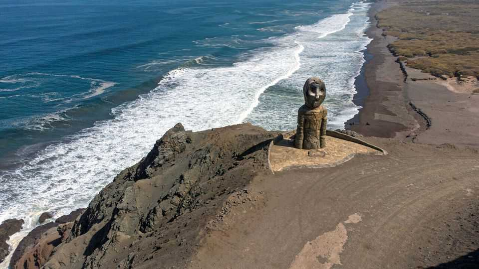

The problem with the world’s oldest mummies
The burial rituals of a culture that thrived 7,000 years ago have ramifications today

Aug 27th 2026
Running 600km along the coast of the Atacama desert, from southern Peru to northern Chile, is a mass-burial site for the world’s oldest mummies. The Chinchorro, who lived on the strip of coast from 7000BC to 1000bc, and survived by hunting and fishing, were meticulous preservers of their dead. Almost everyone who died could be mummified, with no regard for social status. This, combined with the dry environment of the Atacama, has led to an odd situation: the world’s oldest deliberately preserved bodies are so numerous that they are creating problems.
Lately, more bodies have been emerging from the earth. César Borie is an archaeologist with Chinchorro Marka, an agency that Chile’s government has charged with the protection of the country’s Chinchorro archaeological sites. He studies a skeleton that he stumbled upon while walking around Caleta Camarones, a town near the city of Arica in northern Chile. “We find new remains exposed every time we come here,” he says, gently reburying the bones with his hands. “Keeping them under the soil until the conditions are right is the best we can do.”
This is not a new phenomenon. Chinchorro mummies have been issuing from the ground since at least the early 20th century. Initial expeditions in 1917 transported mummies to museums around Chile, where experts preserved them for study. Archeologists also ran excavations until the 1990s.
But erosion caused by extreme winds and increasing human activity nearby has been accelerating the mummies’ exposure. The region has run out of space to receive the bodies and keep them preserved. It would take hundreds of trucks to distribute them all, says Mr Borie. “There is nowhere to keep the mummies in museums without exposing them to damaging light and temperatures,” says Veronica Silva, an anthropologist at the Natural History Museum in Santiago, Chile’s capital.

And so archaeologists keen to learn more about the Chinchorro’s months-long mummification rituals are having to study the bodies in situ, reburying them when they are finished. “Until we have the right technology, we prefer keeping them underground instead of excavating more,” says Camila Castillo, also of Chinchorro Marka. A new museum that is under construction south of Arica should help.
In 2021 UNESCO added the Chinchorro remains and their landscape to its list of world heritage sites. That presented a possible solution: developing the sites into a tourist attraction, and hosting many of the mummies there. But not everyone is happy with that. A small fishing community has illegally built makeshift homes in the Camerones valley within the site. UNESCO would like them to relocate, but they are not so keen. Meanwhile their numbers are growing, and their presence is increasingly damaging the remains.
The local mayor, Christian Zavala, has upped the tension by saying the mummies get more attention than his constituents. But some older residents like José Concha, who has lived in the area for more than 30 years, understand the economic opportunities they offer. “I’m becoming too old to go fishing,” he says. “I would love to become a tour guide to teach tourists about the mummies.”
Ms Castillo says Chinchorro Marka hopes to raise money to set up a centre where the mummies can be studied and exhibited in collaboration with residents of Camarones. But if that is to work, the archaeologists will need to show that they care as much about Caleta Camarones’s future as they do about its past. ■